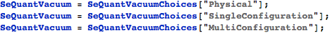
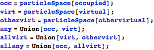
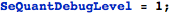

SeQuant User Guide
Environment Setup
Vacuum Choices
In SeQuant, you can choose your reference state as physical vacuum, single-configuration wave-function and multi-configuration wave-function by setting the SeQuantVacuum variable. The Default choice is single-configuration wave-funciton.
For example:

Particle Space
The particleSpace data type determines the space of the particle. There are six different particleSpace in SeQuant. They are occ, virt, any, othervirt, allvirt and allany.
occ stands for occupied orbitals and virt stands for unoccupied virtual orbitals. any is the combination of occ and virt, which stands for all the orbitals in the orbital basis set.
In R12 theories, auxiliary basis sets will be used. othervirt can be used to represent auxiliary basis sets. allvirt is the combination of vir and othervirt, which stands for all the virtual orbitals in the complete basis set. allany is the combination of occ and allvirt, which stands for all the orbitals in the complete basis set.
Here is the source code:

Debug Level
The variable SeQuantDebugLevel controls how many details SeQuant will print out. The available value is from 0 to 10. The higher the value is, the more details SeQuant will print out. It will help you in debuging when doing development. The default value of SeQuantDebugLevel is 0. It is recommended to use a value lower than 2.
For example:

User Level Functions
Particle Index
SQS Class
SQM Class
Wick option and function